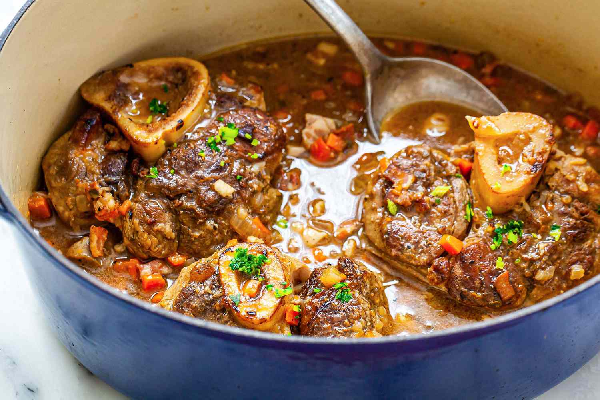

Osso Bucco
Description

The first time I tasted osso bucco, I was in Milan on a serendipitous solo trip. Tucked into a tiny trattoria off a cobblestone street, I sat down at a wooden table, the aromas of citrus and braised veal beckoning me before I even opened the menu. “You must try this,” the waiter said as he set the steaming plate before me. The marrow practically melted in my mouth, and the gremolata sprinkled on top added a bright, zesty punch that I hadn’t expected.
I later learned that osso bucco translates to “bone with a hole,” but it’s so much more than that. It’s a dish that celebrates patience, precision, and the art of slow cooking. Every time I prepare it now, the rich aroma fills my kitchen, and I’m transported back to that intimate corner of Milan, the clink of glasses and laughter reminding me that the best meals are those that tell a story.
Ingredients
- Veal shanks: 4 large pieces, about 1½ inches thick
- Flour: ½ cup, for dredging
- Olive oil: 2 tablespoons
- Butter: 2 tablespoons
- Onion: 1 medium, diced
- Carrot: 2 medium, diced
- Celery: 2 stalks, diced
- Garlic: 3 cloves, minced
- White wine: 1 cup
- Chicken or beef stock: 2 cups
- Crushed tomatoes: 1 cup
- Bay leaf: 1
- Thyme: 2 sprigs (or 1 teaspoon dried)
- Salt and pepper: to taste
- Fresh parsley: 2 tablespoons, chopped
- Lemon zest: 1 tablespoon
- Garlic: 1 clove, finely minced
Recipe
- Pat the veal shanks dry and season with salt and pepper.
- Dredge them lightly in flour, shaking off the excess.
- Heat olive oil and butter in a large Dutch oven over medium-high heat.
- Sear the veal shanks on all sides until golden brown. Remove and set aside.
- In the same pot, reduce the heat to medium. Add onion, carrot, celery, and garlic. Sauté until softened (about 5-7 minutes).
- Pour in the white wine, scraping up any browned bits from the bottom of the pot.
- Add the crushed tomatoes, stock, bay leaf, thyme, salt, and pepper. Stir to combine.
- Return the veal shanks to the pot, ensuring they’re partially submerged in the liquid.
- Cover and simmer on low heat for about 1½ to 2 hours, or until the meat is tender and falling off the bone. Alternatively, you can bake it in a 325°F (160°C) oven.
- In a small bowl, combine parsley, lemon zest, and garlic.
- Plate the veal shanks with the sauce spooned over them. Sprinkle with gremolata for a bright, fresh finish.